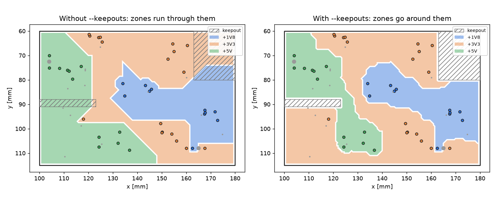
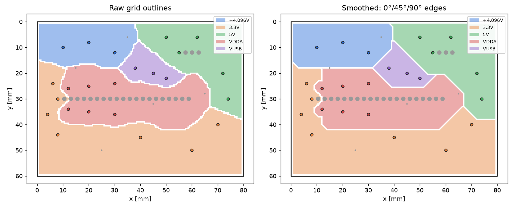

kicad-splitplane
Split a KiCad power layer into one continuous copper zone per voltage, computed from where your vias are. Runs as a KiCad plugin, from the command line, or through AI agents (MCP).
Available in KiCad's official Plugin and Content Manager: search for kicad-splitplane and press Install. See Install. Downloaded times and cloned times on GitHub so far.
![Animation of the algorithm on a board with three supplies on one inner layer. Step 1: one net at a time, a Dijkstra search spreads from the vias already connected until it reaches the nearest unconnected via, and that path is added, until each net's vias form one tree; routes of different nets never cross. Step 2: every spot of the layer goes to the closest tree, measured around other copper. Step 3: the staircase borders are straightened into 0, 45 and 90 degree segments with a gap between the zones. Result: one continuous zone per supply.](img/demo.gif)
On a 4-layer board the inner power layer is often shared by several supplies (5V, 3.3V, 1.8V…). Each supply needs its own zone, and each zone has to contain every via of its net, nothing of the other nets, and be one continuous piece of copper. Drawing those outlines by hand is trial and error. This tool does it for you: it connects each net's vias with a path, splits the layer around those paths, and draws the borders with straight 0°/45°/90° edges.
KiCad plugin
Needs KiCad 9 or newer on Windows, macOS or Linux. The plugin works on the board that is open in the PCB editor and writes the zones straight into it as one undo step.
1. Enable the KiCad API (once)
In KiCad: Preferences → Preferences… → Plugins, tick Enable KiCad API, press OK and restart KiCad.
2. Install the plugin
kicad-splitplane is listed in KiCad's official plugin repository, so you can install it from within KiCad:
- In the KiCad project manager open Plugin and Content Manager.
- On the Plugins tab, search for kicad-splitplane and press Install.
- Press Apply Pending Changes.
Updating: when a new version is out, KiCad offers it as an update in the Plugin and Content Manager.
Without the Plugin and Content Manager (offline, or to try a version before it is listed): download kicad-splitplane-<version>-pcm.zip from the latest release on GitHub, don't unzip it, and use Install from File… (bottom left of the Plugin and Content Manager). If you installed the zip before, uninstall that copy first and then install from the list, so KiCad can offer updates.
3. First run
Open a board in the PCB editor. A new Split power plane button appears in the top toolbar (also under Tools → External Plugins). The first time you press it, KiCad installs the plugin's Python packages (numpy, scipy, shapely, matplotlib) in the background. That takes a minute or two and shows nothing; just wait, then press the button again if no window has appeared.
Using it in KiCad
- Place the power vias first. Each supply needs at least one via or through-hole pad that reaches the plane layer. If you have not placed them yet, tick Use SMD pads as stand-in vias to get a first impression of the split.
- Press Split power plane in the toolbar.
- Choose the Layer to split (e.g.
In2.Cu). - Tick the nets that share this layer. The list shows supply-like nets with their number of vias/THT pads and SMD pads; tick show all nets if yours is missing.
- Press Preview. The split appears on the right, other nets' pads and vias in grey, and the log below. OK: one zone per net means the split is clean.
- Press Apply. The zones are written into the board and filled. Existing zones of the selected nets on that layer are replaced.
- Close the window, check the result and run the Design Rules Checker. Ctrl+Z removes all zones of one run at once.
- Optional: zones in their own colours. In the Appearance panel open the Nets tab, right-click each supply net → Set Net Color…, and set Net colors at the bottom to All. The log after Apply lists the colours of the preview. (The command line does this for you.)
Settings in the dialog
| Setting | Default | What it does |
|---|---|---|
| Gap between zones | 0.5 mm | Copper gap between neighbouring zones |
| Clearance to edge | 0.5 mm | Distance from the board edge |
| Warn below width | 1.0 mm | Warn where a zone's copper gets narrower than this |
| Grid resolution | 0.5 mm | Routing grid; try 0.3 if a via is reported as trapped |
| Use SMD pads as stand-in vias | off | Preview the split before the power vias exist |
| Smooth 45° outlines | on | Straight 0°/45°/90° borders instead of the raw grid outline |
| Plain Voronoi | off | Skip connecting the vias (faster, may create islands) |
| Keep existing zones | off | Don't replace zones of these nets already on the layer |
| Fill zones after applying | on | Run KiCad's zone fill right after Apply |
| Gap and edge from design rules | off | Take the gap and the edge clearance from the board's design rules (saved project file); see below |
| Leave keepout areas free | off | Plan the zones around keepout areas instead of through them |
| Save HTML report next to the board | off | On Apply, write a one-page report and open it in the browser |
What the warnings mean
| Message | What to do |
|---|---|
| via … is trapped by other nets | The via is enclosed by other supplies, so no continuous zone can reach it. Move it to the suggested position, or add a short fanout track. |
| has a neck narrower than … | Somewhere the zone gets thin. Often unavoidable next to dense connectors; otherwise move vias to give it more room. |
| zone runs over a … pad/via | A zone would cover another supply's pad. Usually means two supplies' pads are very close together. |
| pad/via … is not connected to its zone | The zone does not reach this pad once KiCad clears around other copper. |
| another KiCad window is using the KiCad API | Only one KiCad instance can serve plugins. Close the other KiCad windows (e.g. a board opened by double-click while KiCad was already open), open the board again and retry. |
| copper cut into … pieces | A row of other pads (e.g. a pin header) cuts the zone apart. |
| via/pad … lies in a keepout area | With keepouts on: a via of the net sits where copper pours are not allowed. Move it, or check the keepout's layers. |
Command line
Needs Python 3.9+. Works on Linux, macOS and Windows; you don't need KiCad installed.
pip install kicad-splitplane
# which supply nets does the board have?
kicad-splitplane board.kicad_pcb --list-nets
# split In2.Cu between three nets
kicad-splitplane board.kicad_pcb --layer In2.Cu --nets 5V 3.3V VBUSOr from the source: git clone https://github.com/atuzlak/kicad-splitplane, pip install -r requirements.txt, then python kicad_splitplane.py … with the same options.
This writes board_splitplane.kicad_pcb (your board plus the zones), board_splitplane.png (preview) and a copy of the project files that keeps your design rules and shows every zone in its preview colour. Your original files are left alone. Open the new board in KiCad and press B to fill the zones.
Options
| Option | Default | What it does |
|---|---|---|
| --layer | In2.Cu | Copper layer to split |
| --nets | Supply nets sharing that layer | |
| --gap | 0.5 mm | Copper gap between neighbouring zones |
| --edge | 0.5 mm | Clearance to the board edge |
| --min-neck | 1.0 mm | Warn where a zone gets narrower than this |
| --res | 0.5 mm | Routing grid; try 0.3 to 0.6 if a via gets trapped |
| --include-smd | off | Treat SMD pads as vias (preview before fanout) |
| --no-smooth | off | Keep the raw grid outlines instead of 0°/45°/90° edges |
| --plain | off | Skip connecting the vias (faster, may create islands) |
| --keep-old | off | Keep existing zones of these nets on the layer |
| --rules | off | Gap and edge clearance from the board's design rules; --gap/--edge then act as minimums |
| --keepouts | off | Leave the layer's keepout areas free |
| --report [file] | off | Also write an HTML report (default board_splitplane_report.html) |
| --no-colors | off | Don't colour the nets in the copied project file |
| --json | off | Print the result as one JSON object (for scripts and agents): ok, zones per net, warnings, the written files. Same files and exit codes |
Design rules, keepout areas and report
Three optional settings, all off by default (without them nothing changes):
- Design rules (
--rules, or Gap and edge from design rules in the dialog). The gap between zones becomes the largest clearance that applies to the chosen nets: their net classes in Board Setup and the board's minimum clearance. The edge clearance becomes the board's copper-to-edge clearance. The values are read from the saved project file (board.kicad_pro) and printed in the log. Custom rules (.kicad_dru) are not read; the log says so if the board has any. - Keepout areas (
--keepouts). Rule areas that forbid copper pours on the layer, e.g. under an antenna or around a mounting hole, on the board or inside footprints, are left free and the zones are planned around them. Without it the zones run through them and KiCad cuts them there when filling. If a keepout crosses a zone, part of the net can lose its connection. In the example below, KiCad's fill leaves 5 of the 12 +5V vias unconnected without the option, and none with it. - Report (
--report). One HTML page with the preview, the zones per net, the warnings, the settings used and the log. Print it from the browser to get a PDF.
kicad-splitplane board.kicad_pcb --nets +5V +3V3 +1V8 --rules --keepouts --report
--keepouts, so +5V runs through the strip and KiCad's fill later cuts it in two. Right: with --keepouts, the zones go around both areas.From Python
import kicad_splitplane as sp
text = open("board.kicad_pcb").read()
r = sp.process(text, "In2.Cu", ["5V", "3.3V", "VBUS"])
print(r.log)
sp.render_png(r, "preview.png")
sp.summary(r) # dict: ok, zones per net, warnings
# optional: design rules, keepout areas, report
gap, edge, notes = sp.apply_rules(sp.design_rules("board.kicad_pcb", ["5V", "3.3V", "VBUS"]))
r = sp.process(text, "In2.Cu", ["5V", "3.3V", "VBUS"], gap=gap, edge=edge, keepouts=True)
sp.write_report("report.html", r, "board.kicad_pcb")Use with AI agents (MCP)
kicad-splitplane includes an MCP server, so AI assistants such as Claude, Cursor or VS Code can split power planes for you. Ask for example: “Split In2.Cu of board.kicad_pcb between +5V, +3V3 and +1V8.” The agent finds the supply nets, runs the split, explains the warnings, and you check the result in KiCad.
Add it to your assistant as a local (stdio) server. It needs uv:
{
"mcpServers": {
"kicad-splitplane": { "command": "uvx", "args": ["kicad-splitplane-mcp"] }
}
}In Claude Code: claude mcp add kicad-splitplane -- uvx kicad-splitplane-mcp. Without uv: pip install "kicad-splitplane[mcp]" and use the command kicad-splitplane-mcp. It is listed in the MCP Registry as io.github.atuzlak/kicad-splitplane.
The server has two tools: list_power_nets (the supply nets and copper layers of a board) and split_plane (the same as the command line). It always writes a new board next to yours and never changes the original. The agent can't fill zones or run DRC: open the new board in KiCad, press B and run the Design Rules Checker.
How it works
- Read the board. All vias and through-hole pads of the chosen nets on the layer, the board outline, and every other via, pad and hole with its real size. Other nets' copper is an obstacle: a zone has to keep its clearance to it.
- Connect each net. The vias of each net are joined by a tree of 45° paths that keep away from other nets, never squeeze between pins where no copper fits, and avoid narrow passages. All orders of the nets are tried and the best one wins.
- Split. Every pad keeps a ring of its own net. The rest of the layer goes to the nearest path, measured around obstacles. A region grown from one connected path is itself connected, so no net breaks into islands.
- Clean up and check. The borders are straightened into 0°/45°/90° segments, but only where that does not cut a pad or create a neck. Finally the tool estimates what KiCad will actually fill and reports anything that would not work.

Questions
How do I put several voltages on one inner layer in KiCad?
Draw one copper zone per supply net on that layer, so that each zone contains all vias of its net and none of the others. kicad-splitplane computes those outlines from where your vias are and writes the zones into the board: in KiCad open it from the toolbar, pick the layer and the nets, press Preview and Apply.
Why does my split power plane break into islands?
A split by nearest via (a Voronoi diagram) cuts a net apart whenever another supply's vias lie between its vias, and KiCad then removes or isolates the pieces when filling. kicad-splitplane first connects each net's vias with a path and splits the layer around those paths, so every net stays one piece. A via that no continuous zone can reach is reported with a position to move it to.
Which KiCad versions does it work with? Do I need KiCad installed?
The plugin needs KiCad 9 or newer (it uses the KiCad API) and is installed from KiCad's Plugin and Content Manager. The command-line tool and the Python library read .kicad_pcb files from KiCad 7 to 10 and don't need KiCad at all.
Does it follow my design rules and keepout areas?
Optionally: with --rules the gap between zones comes from the board's net class clearances, with --keepouts the zones are planned around keepout areas. Both are checkboxes in the plugin dialog. See Design rules, keepout areas and report.
Can AI assistants use it?
Yes. It includes an MCP server (uvx kicad-splitplane-mcp), so assistants such as Claude, Cursor or VS Code can list a board's supply nets and split the plane; see Use with AI agents.
Is it free?
Yes, it is open source under the MIT license. The code is on GitHub.
Good to know
- If the zones look awkward, move the vias: keep each net's vias together and use short fanout tracks.
- Don't route signals on the neighbouring layer across the gaps between zones. The split plane is their return path.
- Smaller zones get higher priority, so an island inside a bigger zone still fills correctly. Check the order in KiCad's Zone Manager.
- The plugin needs KiCad 9 or newer. The command line works with files from KiCad 7 to 10. Arcs in the board outline are approximated.
Changes
- 0.6.0: three optional settings, all off by default: gap and edge clearance from the board's design rules (
--rules), keepout areas left free (--keepouts), and an HTML report (--report). Also in the plugin dialog and the MCP server. Without them the output is unchanged. - 0.5.0: works with AI agents: an MCP server (
uvx kicad-splitplane-mcp), JSON output with--json, andpip install kicad-splitplanefrom PyPI. The split itself is unchanged. - November 2026: listed in KiCad's official Plugin and Content Manager.
- 0.4.1: the command line also writes a copy of the project files, so the new board keeps your design rules and shows every zone in its own colour; the plugin explains how to colour the zones and gives a clear message when two KiCad windows compete for the API.
- 0.4.0: pads and vias are handled with their real size; every pad keeps a ring of its own net; other nets' pads, vias and holes are obstacles (no more zones squeezed between header pins); smooth 0°/45°/90° outlines; more precise warnings. Thanks for the feedback from testing it on a 5-supply course project.
- 0.3.1: fixes the plugin window not opening in KiCad.
- 0.3.0: first version of the KiCad plugin.
Thanks
Thanks to Alfonso Blanco Fontao for teaching the Applied PCB Design course at ETH Zürich, which got this project started, and for reviewing the first version and testing it on the course project. His feedback shaped version 0.4.0.
Feedback and contact
Found a bug, have an idea for an improvement, or interested in working together on this? I'd be glad to hear from you. Write me an email at atuzlak@ethz.ch.
Bug reports and pull requests are also welcome on GitHub.